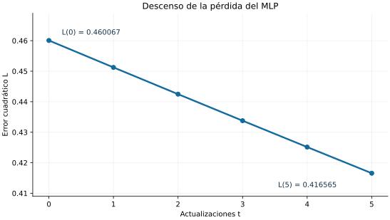

1. Entrenamiento de MLP#
1.1. Enunciado de la sección 2.7#
Realizar cinco iteraciones de descenso de gradiente sobre la red del ejemplo de clase, con tasa de aprendizaje \(\alpha=0.01\) y función de pérdida
Se deben calcular los valores intermedios \(p_1,\ldots,p_{10}\), la predicción, la pérdida, los seis gradientes y la actualización de \(\omega_1,\ldots,\omega_6\). El ejercicio pide registrar los resultados, graficar la pérdida, explicar el tamaño de los cambios y estudiar una tolerancia de \(10^{-6}\).
El PDF proporcionado, Cinco iteraciones de gradiente descendente, especifica los datos y el grafo del ejemplo. Este capítulo desarrolla sus cálculos y reproduce sus resultados; la fuente del ejemplo se describe en las referencias. La captura del enunciado inicial se conserva en el anexo.
1.2. Datos del ejercicio#
Las entradas, el objetivo y la tasa de aprendizaje son
Los seis pesos iniciales son
Las dos neuronas ocultas utilizan la sigmoide
La salida combina linealmente las dos activaciones. El grafo de este ejercicio no incorpora términos de sesgo. El estado \(t=0\) es el inicial, y \(t=1,\ldots,5\) indica cuántas actualizaciones se han completado. Los cálculos conservan su precisión completa; las tablas muestran seis decimales.
1.3. Paso hacia adelante#
Los diez nodos se calculan en este orden:
Por tanto,
Cada fila de las tablas contiene los nodos, la salida y la pérdida calculados con los pesos de esa misma fila.
1.4. Derivada de la pérdida#
El valor observado \(y=1\) se mantiene fijo al derivar. Aplicando la regla de la cadena,
El factor \(2\) debe conservarse, porque el ejercicio define \(L=(y-\hat y)^2\) sin el factor \(1/2\). Como en el PDF, escribimos
Para cualquier peso,
1.4.1. Gradientes de los pesos de salida#
Como \(\hat y=p_7\omega_5+p_8\omega_6\), las activaciones \(p_7\) y \(p_8\) no dependen de los pesos de salida. Por ello,
1.4.2. Gradientes de los pesos de las neuronas ocultas#
Para \(\omega_1\), recorremos la dependencia \(\omega_1\to p_1\to p_5\to p_7\to p_9\to\hat y\to L\):
Para \(\omega_2\), la última derivada es \(\partial p_2/\partial\omega_2=y_2=2\). La segunda neurona utiliza \(p_8\) y \(\omega_6\). Así se obtienen los cuatro gradientes:
El factor \(2\) de los gradientes de \(\omega_2\) y \(\omega_4\) proviene de la entrada \(y_2=2\); el factor de la derivada de la pérdida ya está incluido en \(\delta\).
1.5. Cinco actualizaciones#
Las cinco actualizaciones llevan sucesivamente del estado \(t=0\) a los estados \(t=1,2,3,4,5\). Para cada \(t=0,\ldots,4\), se repiten los siguientes pasos.
1.5.1. Paso 1 Calcular la propagación hacia adelante#
Se evalúan \(p_1^{(t)},\ldots,p_{10}^{(t)}\) con los seis pesos del estado \(t\), y se obtiene \(\hat y^{(t)}=p_9^{(t)}+p_{10}^{(t)}\).
1.5.2. Paso 2 Calcular la pérdida de la misma fila#
1.5.3. Paso 3 Calcular los seis gradientes#
Se calcula \(\delta^{(t)}=2(\hat y^{(t)}-1)\) y se sustituyen los pesos y activaciones de ese estado en las seis fórmulas anteriores. Todos los gradientes se evalúan antes de modificar cualquier peso.
1.5.4. Paso 4 Actualizar simultáneamente los pesos#
Usar un peso recién actualizado al calcular otro gradiente produciría un algoritmo distinto. En este ejercicio los seis cambios utilizan el mismo estado anterior.
1.5.5. Paso 5 Evaluar el nuevo estado#
Después de actualizar los seis pesos se vuelve a calcular la propagación hacia adelante. Así, \(\hat y^{(t+1)}\) y \(L^{(t+1)}\) corresponden a los pesos nuevos. Se conserva la precisión completa entre actualizaciones y se redondea únicamente para presentar los resultados.
1.6. Primera actualización paso a paso#
1.6.1. Propagación hacia adelante con los pesos iniciales#
Sustituyendo \(\omega^{(0)}\),
Sumamos las entradas de cada neurona:
Aplicamos la sigmoide:
Multiplicamos por los pesos de salida:
Finalmente,
1.6.2. Propagación hacia atrás en el estado inicial#
La sensibilidad respecto de la salida es
Este es el valor que corresponde a la pérdida del enunciado. El PDF corrige expresamente el valor \(-0.919\) atribuido al ejemplo anterior.
Por ejemplo, los gradientes de \(\omega_1\) y \(\omega_5\) se calculan como
En el orden \(\omega_1,\ldots,\omega_6\), los seis gradientes son
1.6.3. Sustitución en la regla de actualización#
Aplicando (1.1) a cada peso,
Con los nuevos pesos se repite el paso hacia adelante:
La pérdida de la primera actualización es menor que \(L^{(0)}\).
1.7. Valores del paso hacia adelante#
La fila \(t\) utiliza los pesos \(\omega^{(t)}\). Para facilitar la lectura se separan los diez nodos en dos tablas.
\(t\) |
\(p_1\) |
\(p_2\) |
\(p_3\) |
\(p_4\) |
\(p_5\) |
\(p_6\) |
|---|---|---|---|---|---|---|
0 |
0.330000 |
-0.660000 |
-0.570000 |
-0.020000 |
-0.330000 |
-0.590000 |
1 |
0.330231 |
-0.659076 |
-0.567448 |
-0.009791 |
-0.328845 |
-0.577238 |
2 |
0.330478 |
-0.658086 |
-0.564896 |
0.000417 |
-0.327608 |
-0.564479 |
3 |
0.330742 |
-0.657033 |
-0.562345 |
0.010620 |
-0.326291 |
-0.551725 |
4 |
0.331020 |
-0.655919 |
-0.559796 |
0.020816 |
-0.324898 |
-0.538980 |
5 |
0.331314 |
-0.654745 |
-0.557249 |
0.031003 |
-0.323432 |
-0.526246 |
Después de aplicar las sigmoidales y los pesos de salida:
\(t\) |
\(p_7\) |
\(p_8\) |
\(p_9\) |
\(p_{10}\) |
|---|---|---|---|---|
0 |
0.418241 |
0.356635 |
0.029277 |
0.292441 |
1 |
0.418522 |
0.359568 |
0.031671 |
0.296586 |
2 |
0.418823 |
0.362512 |
0.034049 |
0.300765 |
3 |
0.419143 |
0.365464 |
0.036410 |
0.304977 |
4 |
0.419482 |
0.368425 |
0.038756 |
0.309221 |
5 |
0.419840 |
0.371393 |
0.041085 |
0.313496 |
Los valores con mayor precisión se incluyen en mlp_nodos_v1.csv. Sumar los valores ya redondeados de \(p_9\) y \(p_{10}\) puede cambiar la última cifra mostrada de \(\hat y\); la predicción se calcula antes de redondear.
1.8. Gradientes de las cinco actualizaciones#
Los gradientes del estado \(t\) producen los pesos del estado \(t+1\). Por eso hay cinco filas de gradientes, de \(t=0\) a \(t=4\), y seis filas de estados, de \(t=0\) a \(t=5\).
\(t\) |
\(\partial L/\partial\omega_1\) |
\(\partial L/\partial\omega_2\) |
\(\partial L/\partial\omega_3\) |
\(\partial L/\partial\omega_4\) |
\(\partial L/\partial\omega_5\) |
\(\partial L/\partial\omega_6\) |
|---|---|---|---|---|---|---|
0 |
0.023105 |
-0.046210 |
0.255232 |
-0.510465 |
-0.567371 |
-0.483798 |
1 |
0.024742 |
-0.049483 |
0.255186 |
-0.510371 |
-0.562278 |
-0.483075 |
2 |
0.026326 |
-0.052652 |
0.255078 |
-0.510155 |
-0.557191 |
-0.482276 |
3 |
0.027858 |
-0.055716 |
0.254908 |
-0.509816 |
-0.552106 |
-0.481399 |
4 |
0.029339 |
-0.058678 |
0.254675 |
-0.509351 |
-0.547025 |
-0.480443 |
Por ejemplo, la segunda actualización de \(\omega_5\) es
Los gradientes con mayor precisión están en mlp_gradientes_v1.csv.
1.9. Tabla de resultados#
Cada fila registra los seis pesos, la salida y la pérdida después de \(t\) actualizaciones simultáneas.
\(t\) |
\(\omega_1\) |
\(\omega_2\) |
\(\omega_3\) |
\(\omega_4\) |
\(\omega_5\) |
\(\omega_6\) |
\(\hat y^{(t)}\) |
\(L^{(t)}\) |
|---|---|---|---|---|---|---|---|---|
0 |
-0.330000 |
-0.330000 |
0.570000 |
-0.010000 |
0.070000 |
0.820000 |
0.321717 |
0.460067 |
1 |
-0.330231 |
-0.329538 |
0.567448 |
-0.004895 |
0.075674 |
0.824838 |
0.328257 |
0.451239 |
2 |
-0.330478 |
-0.329043 |
0.564896 |
0.000208 |
0.081296 |
0.829669 |
0.334813 |
0.442473 |
3 |
-0.330742 |
-0.328517 |
0.562345 |
0.005310 |
0.086868 |
0.834491 |
0.341387 |
0.433771 |
4 |
-0.331020 |
-0.327959 |
0.559796 |
0.010408 |
0.092389 |
0.839305 |
0.347977 |
0.425134 |
5 |
-0.331314 |
-0.327373 |
0.557249 |
0.015502 |
0.097860 |
0.844110 |
0.354582 |
0.416565 |
La tabla coincide a seis decimales con la página 4 del PDF proporcionado. Puede descargarse con mayor precisión en mlp_cinco_iteraciones_v1.csv.
1.10. Respuestas a las preguntas#
1.10.1. ¿Disminuye la pérdida en cada iteración?#
Sí. En las cinco actualizaciones calculadas,
La pérdida pasa de \(0.4600672527\) a \(0.4165646716\). La reducción absoluta es
y la reducción porcentual es


Figura 1.1 Pérdida del ejemplo de clase tras cada actualización simultánea, con \(\alpha=0.01\). El estado inicial corresponde a \(t=0\).#
Esta disminución está comprobada para los datos y las actualizaciones del ejercicio. Un paso fijo de \(0.01\) no garantiza por sí solo descenso en cualquier red y en cualquier punto.
1.10.2. ¿Por qué los cambios pueden ser pequeños con \(\alpha=0.01\)?#
Por la regla de actualización,
La tasa de aprendizaje multiplica el gradiente por una centésima. Por ejemplo, en la primera actualización,
El tamaño del cambio depende de la tasa y de la magnitud del gradiente. Una tasa mayor produce un desplazamiento mayor para el mismo gradiente, pero también puede provocar oscilaciones o aumentar la pérdida. El capítulo sobre tamaño de paso desarrolla esta relación en el caso cuadrático.
1.10.3. ¿Cuántas iteraciones adicionales hacen falta para una tolerancia de \(10^{-6}\)?#
El criterio del PDF compara las pérdidas de dos estados consecutivos:
Continuando el mismo procedimiento desde los datos iniciales, sin redondear entre actualizaciones, el primer estado que satisface el criterio es \(t=255\). La comprobación recorre los estados anteriores y ninguno de \(t=1,\ldots,254\) satisface la desigualdad. Cerca del punto de parada,
Estado \(t\) |
\(L^{(t)}\) |
\(\lvert L^{(t)}-L^{(t-1)}\rvert\) |
¿Es menor que \(10^{-6}\)? |
|---|---|---|---|
254 |
\(2.2372576354\times10^{-5}\) |
\(1.0334580771\times10^{-6}\) |
No |
255 |
\(2.1384678736\times10^{-5}\) |
\(9.8789761814\times10^{-7}\) |
Sí |
Por tanto, después de las cinco actualizaciones solicitadas se necesitan
El criterio mide el cambio de la pérdida entre estados consecutivos. En el estado \(255\) la pérdida todavía vale aproximadamente \(2.1385\times10^{-5}\); no se está exigiendo que \(L^{(t)}<10^{-6}\). Un cambio pequeño tampoco certifica por sí solo que se haya alcanzado un mínimo global.
Los valores y el criterio de parada se incluyen en mlp_tolerancia_v1.json.
1.11. Reproducir los resultados#
El programa mlp_ejemplo_clase_v1.py implementa este grafo, sus seis gradientes analíticos, las actualizaciones simultáneas y la búsqueda del primer estado que cumple la tolerancia. Desde la raíz del repositorio puede ejecutarse con
python book_bonificacion/codigo/mlp_ejemplo_clase_v1.py
También se conserva la plantilla general mlp_cinco_iteraciones.py. Esta permite suministrar otra función de propagación y sus derivadas; el programa específico anterior reproduce los datos de este capítulo.